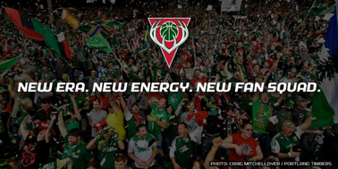
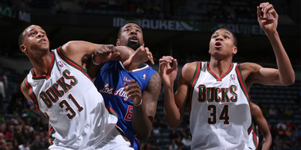

Prominent Milwaukee Community Leaders Form Organization and Join Bucks Ownership Team.

Today, the Milwaukee Bucks organization is proud to announce the addition of several community leaders and philanthropists to the Bucks ownership team: Partners for Community Impact LLC ("PCI"), Gale Klappa, CEO of Wisconsin Energy Corporation, and Jon Hammes, managing partner of Hammes Company. PCI is led by prominent Milwaukee-area community members who came together to invest in the Bucks franchise.
Bucks Coach Recruits Super Fans to Launch Ultimate Fan Squad

Today, the Bucks announced a unique opportunity for hard-core Bucks fans to help the team create and name a new Ultimate Fan Squad. Bucks Head Coach Jason Kidd is looking to reward and empower 100 of the loudest, most passionate fans to cheer on the team this upcoming season as part of the Bucks Ultimate Fan Squad at the BMO Harris Bradley Center.
Bucks Exercise Rookie Scale Contract Options on Antetokounmpo and Henson

The Milwaukee Bucks have exercised the third-year contract option on Giannis Antetokounmpo and the fourth-year contract option on John Henson, General Manager John Hammond announced today.